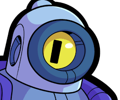
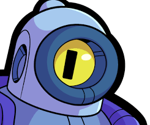
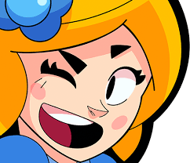
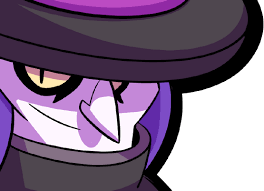

Brawlers
Brawl Stars is a game of combat and 2D shooting. Brawlers
are the characters you play as. Every brawler has different
abilites and a unique play style. The brawlers are unique
through attacking, their supers, appearances, and cosmetics.
Cosmetics
Add-ons for brawlers can alter the play style of them.
It can make dealing with enemies more efficient or confusing.
The first ones are Gadgets. Gadgets are three time uses that
are unique for each brawler. These can heal, be a new attack,
or a state the brawler can enter for a short amount of time.
The second ones are Gears. These are small consistent changes
that strength the brawler. For example, resistence, damage buff,
or a fourth gadget use. They are given to every brawler and are
not unique. The third ones are starpowers, similar to gears but
offer changes that are unique to the brawler. This can be adding
flame effects, altering projectile movements, or a state that
they can enter. Lastly are hypercharges (explained in History page)
 El Primo is Rare rarity brawler, a Tank type, meaning he has much more health in order to tank damage.
Usually, Tanks have shorter attack range so they go closer with the larger amount of health. The rare rarity means the brawler is common.
 Rico is a Super Rare brawler and a Damage dealer type. He is made to deal alot of damage at a time but has lower health than a tank.
Super rare is rarer than a rare
El Primo is Rare rarity brawler, a Tank type, meaning he has much more health in order to tank damage.
Usually, Tanks have shorter attack range so they go closer with the larger amount of health. The rare rarity means the brawler is common.
 Rico is a Super Rare brawler and a Damage dealer type. He is made to deal alot of damage at a time but has lower health than a tank.
Super rare is rarer than a rare
 Piper is an Epic brawler and a Marksmen type. She is meant to attack from long ranges and deal alot of damage. she struggles against those who
can move fast. Epic is rarer than super rare.
 Mortis is a Mythic brawler who is an Assassin. he is fast and can go in quickly.